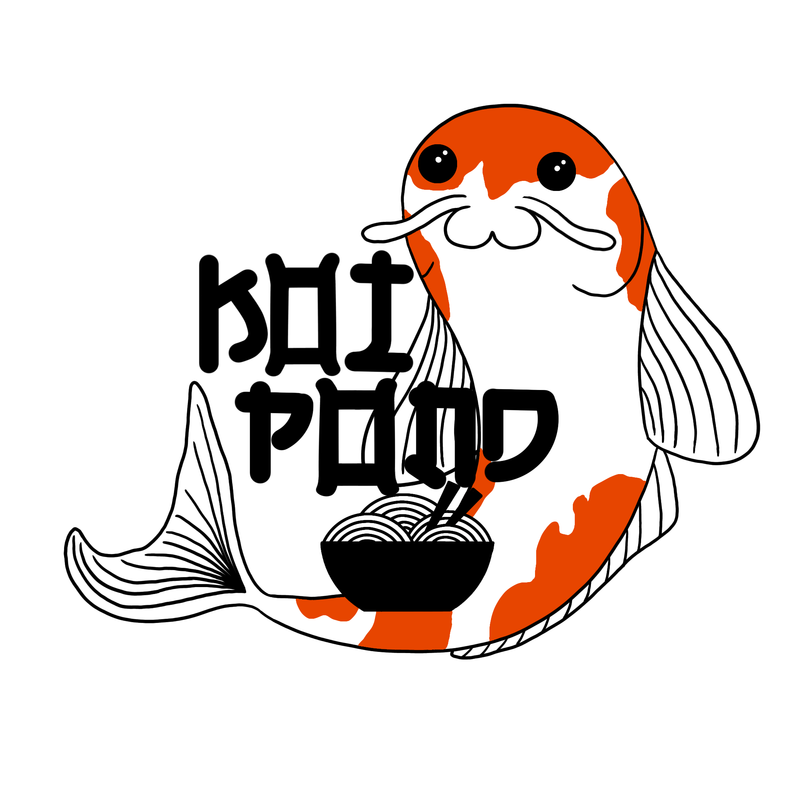

¿Quieres conocer a nuestra plantilla?
Zeff: Es el jefe de cocinas, algo cascarrabias, pero gracias a su experiencia cocinando en el mar, disfrutarás de los mejores platos conocidos.
Remy: El ayudante de cocinas, empezó por lo más bajo del mundo gastronómico, pero gracias a un talento ganado de manera repentina, se ha ganado un lugar entre los fogones.
Rin: El camarero más ágil trabaja en Koi Pond. Gracias a su entusiasmo y a su prodigiosa memoria, ¡los platos llegarán antes de que los pidas!
En Koi Pond, traemos los mejores platos de la cultura japonesa a la mesa. Disponemos de surtidos de sushi,
platos de ramen, algas, arroces, gyozas... ¡todos los sabores que puedas pensar estarán servidos en tu mesa
a la hora de comer!
Además, si preguntas en el restaurante, podrás elegir entre menús con distintos platos, y el menú del día que
nuestros cocineros preparan con esmero, ¡no te cortes, prueba los platos que quieras y disfruta de la comida
asiáctica!
¿Necesitas algo para beber cuando estés disfrutando los manjares de Koi Pond?
¡Pues estás de suerte, porque además de los deliciosos platos que servimos,
tenemos una amplia gama de bebidas asiáticas para acompañarte en tu experiencia en Koi Pond!
Con nuestras bebidas, tanto bebidas con alcohol para los adultos como refrescos
para los pequeños, disfrutarás de los sabores más deliciosos que la cultura asiática tiene para ofrecer.
Si quieres atreverte con nuestro especial, ven y disfruta de la bebida creada por nosotros, ¡El Koi Pond!
Teléfono de contacto: 123456789
Email de contacto: koipond@koi.com
Dirección: Calle Koi, Alcalá, Madrid